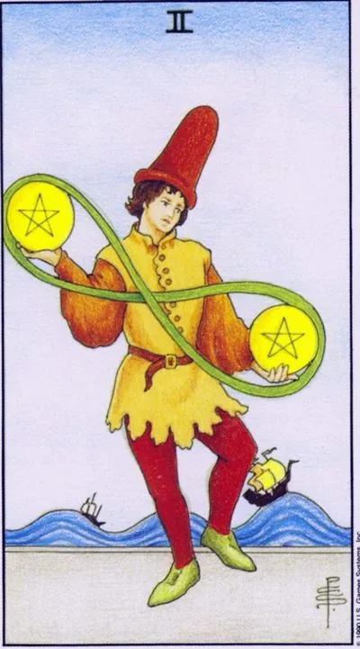

Minor Arcana · Pentacles
IITwo of Pentacles
Juggling with chores and resources: flexibility, a sense of rhythm and a light hand keep balance in a changing world.
Archetype and core meaning
A young man in a buffoon's cap dances by throwing two coins connected by the infinity sign. Behind him, waves swing ships -- the world is unstable, but the hero doesn't fight the waves, he dances in their rhythm. The two pentacles are the art of keeping several spheres of life in motion at once without letting any fall.
The lemniscata overhead tells us that juggling is not an auroral, it's a lifestyle, a cyclical redistribution of attention. Today, one thing is more important, tomorrow, and flexibility is virtue, not unscrupulousness. The card respects those who can laugh in the middle of a swing and choose what priority is to take over everything at once.
Daily life
Your home schedule is like a circus show: work, kids, shopping, repairing, everything takes place simultaneously. A two pentacles approve of your style: lists, switching, moving the non-urgent to tomorrow. A good time to combine things -- listen to an audiobook on the way, solve questions on the phone in line. Easy saves better heroism.
Work and career
The working reality is parallel projects, freelancing plus staff, seasonal workloads. The card confirms that you're coping with roles that would break many. The income comes in an unequal wave, but on average converges. It's useful to re-evaluate priorities once a week: which one really leads to the goal and which one just takes up hands.
Relationships
Relationships only have time if you're consciously sharing it, and the partner is busy, you're busy, and the card doesn't think it's a tragedy, provided that the meetings don't stay on a residual basis, and the humor and the playfulness strengthen the union more than serious conversations: have an evening without a agenda, just have fun together.
Health
The living organism loves to alternate: interval training works better than monotonous, changing activities restores strength faster than passive lying. Make sure that the swing "load-rest" does not turn into a storm: sleep should remain an untouchable island. The nervous system at this rhythm is the main resource, protect it.
Spiritual meaning
The infinity sign above the juggler is an indication of the eternal cycle of energies that the master controls playfully. Jupiter in Capricorn gives the card a rare combination: expansion of possibilities within a rigid form. In practice, the card develops the switchability of consciousness, rhythmic breathing, the ability to enter and exit the flow of your choice.
The balance is broken: there are too many balls, priorities are confused, and the most valuable falls with the most superfluous.
Archetype and core meaning
Same juggler, but the dance is over: coins fly past your hands, waves hit the hulls of ships, and the mask of fun is frozen. Inverted deuce is a state where trying to hold everything turns into losing control over every case. A person takes a new ball without releasing the old ones, and calls it responsibility, although there is a reluctance to choose.
The card makes an uncomfortable diagnosis: overload is not a feat, but a form of flight. As long as all spheres are held to their word, none of them live fully. The card's question is simple: what ball are you willing to put on the ground? A conscious renunciation of part of the commitment is not a defeat, but the return of the ability to control the rest.
Daily life
Days merge into a carousel of forgotten payments, late payments and unfinished business, and the unsolved questions piling up at home: the bill is not paid, the tap drips, the phone to your parents is delayed for the fourth day, the first thing you do is shorten the list: cross out half the points without regrets, trying to finish everything at once ensures that nothing is done.
Work and career
Projects overlap, timelines conflict, quality declines — the classic picture of an inverted two. Leadership can load tasks beyond the contract, and you silently agree. It's time to raise the issue of delegation or rejection: three brought to mind projects are worth more than seven, forever stuck in drafts.
Relationships
The partner gets a bit of attention -- between calls, on the run, tired at midnight, and the grudges piling up quietly, and then they explode over trifles, and maybe the busyness has become a shield from intimacy, and the card recommends an honest audit: if the relationship gets the crumbs off the table, it's worth either putting them at the table or admitting the truth.
Health
Constant switching is a nerve-wracking thing: insomnia, shoulders that rock in the evening, snacking on the go instead of eating, immunity is losing ground, old sores remind you of themselves, the body asks not for windows, but for routines: the same bedtime, normal meals, at least twenty minutes of complete immobility a day.
Spiritual meaning
The energy is sprayed through a dozen channels, and none is filled to the depths, as this card is read in the practitioner's language: protection crumbles, intent dies out without gaining strength. Medicine is the principle of one thing: to complete the current before opening the new, and to close the energy doors behind you. A simple discipline without which all magic remains a fuss.
🌿 How the school reads this rank
The main idea
Changes in material form: changes in prices, courses, habits, body and living conditions — and you have to keep your balance.
How it manifests
Money is about price and currency fluctuations, the exchange of resources, and the need to understand how they move, the work of updating, repairing, and adjusting the way they work, and the relationship changes the tastes, habits, and physical needs of the partners.
The shadow side
The person does not have time to adapt and tries to keep what already needs updating.
Keywords
Change of form · equilibrium · price · resources · flexibility
📜 In detail — from the rank lecture
Essence of the card
The world is divided into two halves: here we are familiar, and here we are new and unfamiliar. We have to adapt. The eight (lemniscata/uroboros) is a symbol of the continuous eternal changes in the material world: the living world changes, the dead would be dead.
Upright position
- Decoding: the tall red cap is not a buffoon cap, but a sailor/fisherman cap (photo from 1898, British merchant navy tradition, equivalent to a construction helmet) The hero "does not jump or dance, but walks from foot to foot, catching balance on a swinging deck" - as after a week on a train, when "the ground is rocking."
- Finance: the cost of everything is constantly changing - exchange rates, real estate prices, the cost of services; "borrowed money", transferring currency into currency, playing on the difference - "understanding money saves from losses."
- Health: Physical condition moves toward improvement or deterioration; often indicates paired organs (kidneys, lungs, tonsils).
- Work/life: card-bicycle — "to not lose shape, you need to constantly pedal": repair, updating the interior and equipment, adjusting the recipe of a specialty so that it does not get boring. For the land, a complex card: I would like to "put one price forever", but you can not.
- Relationships: the domestic and physical (sexual) side are the base of the couple; the habits, tastes and interests of the partner change - watch out, otherwise you will lose physical contact. Many pentacles in the relationship are ruled by money and physics.
Negative meaning
The same changes, but “work against you”: you can not raise the price, the house without care becomes cheaper; “want – do not want, you will have to change.”
School emphases and distinctive points
- Junior arcana are disassembled by fours; each next arcana “unfolds” the feeling of the elements.
- Author's historical excavations of images: the red cap of a sailor; chocanje and brewderscape from the poisons of antiquity; dark pitfalls of swords are painted intentionally - "if you look well at least 100 years ago."
- Didactic models: card of the day; ice cream as a model of a straight / inverted card; pentacle bicycle; lemniscata-uroboros; the second coin of any situation.
- Kabbalah/Sfirot does not use at all (“you need to be a little Jewish”), numerology is discarded; astrology is mentioned only as a help to read the client – there is no own astrological binding of doubles in the lecture.
- Practice of alignments: you can do it yourself, "if you do it well"; kickbacks are not mysticism, but immersion in the client's emotions (work with the investigators on hangings in Brest); reset rituals are individual - he was able to wash his hands / face. Cards do not get tired and do not lie - a person gets tired.
- Modern series and humor: pitching after the placer, exchange rates and real estate, Maybach vs. Zhiguly, "such things are pies", "elk on corn".
- Positioning: theory is freely available, practice is in small groups (~7 people, 40 two-hour lectures, course ~300 euros with an increase to ~400): “Practice is my personal experience, which I have the right to monetize.”
Keywords
change of shape; pitching and equilibrium; rates and prices; borrowed money; pedaling.